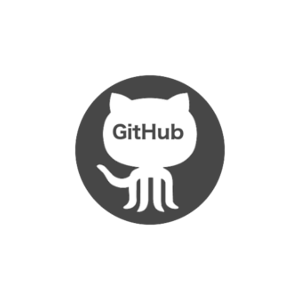
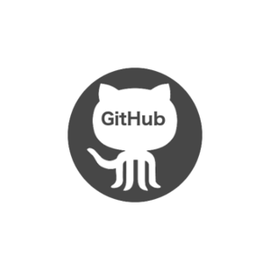

Chandan Adiga

(Scan to get this page's link)
Chandan Adiga
(Scan to get this page's link)
Well, I have started my Profesional career with Android App development. It was Donut, Eclair, Froyo release time.
Developped and published around 6-7 apps and games with these releases.
Then, got a chance to work on Android UI framework, where in, maintained Android OS upgrade tasks from older versions to GingerBread(GB).
Soon, HoneyComb released.. and followed by Ice Cream Sandwitch. Okay, enough of upgrading OS!
Back to Android app development space: Developped a digital content publishing app, featuring- list items, In app purchase & subscription handing,
downloading of content, content reader, content sharing on social media functionalities. It is again a framework kind of app,
from which customization starts for each content publisher.
By this time, my Android app development experience covered: 3rd partly library integration(OkHttp, Volley, Picasso etc),
Ad Network integration(AdMob, InMobi etc) and crash/analytics SDK integration(Flurry etc). Also, got several chance to
develop some of framework/libraries to ease the development process along the way!
Developped some of android apps to learn, to share etc and hosted on my GitHub account. Couple of them are
Android Notification Compatible API usage PoC ,
Android LogManager .
Recently, while learning NodeJS server side development, developped an Android mobile client to test the same. Basically server provides REST APIs to fetch, add, delete and search items in Item's inventory. And the Android mobile app developped using Kotlin, with help of RxJava & Retrofit; makes use of these APIs to allow users to access the ItemsInventory system .
Although, during beginning of my career with Android app development, I have started learning iOS app development(That time, it was through Objective-C), it was just 'Hello World', Button Click apps.
Later, as part of my 'iOS App Development Certification(Swift)' course, was suppose to complete a movie review reading app with REST API integration, Table View, image/thumbnail display, story boards etc.
Well then, the journey continues with building an app which disovers and communicates with devices over BLE, an app to collect location information and push/pull data to/from cloud, handle push notifications.
Recently, while learning NodeJS server side development, developped a iOS mobile client to test the same. Basically server provides REST APIs to fetch, add, delete and search items in Item's inventory. And the iOS mobile app developped using Swift, makes use of these APIs to allow users to access the ItemsInventory system..
Web app experience started during my Bachelor degree's final year itself. It was through CGI, perl, php, mySQL, Java Servlet.
Later, started learning struts, hibernate on my own
.
Recently, for completing my Python Certification course, completed a PoC banking web application
.
Later on learned DJango(2.0) framework and developped a sample web app which supports user
sign in/sign out, session management, upload files, process them and get processed files back to download.
Recently, learning NodeJS on my own and developping some PoCs around it .
In this journey, started with developping an end-to-end system for generic item's inventory,
including back end server for REST APIs ,
Android mobile client app and
iOS mobile client app .
My first encounter with machine learning was during my masters; where in completed ML subject
successfully. Althout more of it were theory, I was supposed to complete an assignment - which
was to develop from scratch, a classifier to classify
Iris Flower Data set. My
solution to this assignment is using Native Bayes Classificaiton
.
Later on, I have trained a ML model based on LinearRegression through python's scikit-learn libray
to classify(shortlist) Resumes/CVs automatically. This requires indexing of words which is done via CountVectorizer.
Further processing is done using TF-IDF to improve accuracy/performance based on word frequence and weight.
Well, I have completed my masters with Specialization in Data Analytics. Covering subjects like BigData, Hadoop, ML, AI brought
near to Data Science.
I have been practicing my data science learning through Kaggle™.
All of my work so far, can be found on my Kaggle Profile.
8+ year experienced software engineer, who began career with Android development and continues to be.
Being expert in Android Framework, application development; good hands on experience in iOS app development in Swift,
React Native, Android Things; implementing machine learning & deep learning frameworks; intermediate
exposure of Big Data & Hadoop frameworks and their usage. Developped some of web apps using DJango(2.0), NodeJS.
Vendor: edureka!
Vendor: skillspeed
Vendor: Spring People
Vendor: Coursera / deeplearning.ai
Software Systems(Specialization: Data Analytics), [WILP] BITS Pilani.
Computer Science, VTU Belgaum.
 
